| Part | Model opened in UPPAAL | Query file imported | Figures |
|---|---|---|---|
| A. Model | model/demo_view/amba_AHB_1M1S_clean.uppaal.xml | — | 1–4 |
| B. Paper properties | model/demo_view/amba_AHB_1M1S_clean.uppaal.xml | queries/demo_view/1M1S_QUERIES.q | 5–6 |
| C. Communication in time | model/demo_view/amba_AHB_1M1S_timed_clean.uppaal.xml | queries/demo_view/1M1S_TIMED_QUERIES.q | 7–9 |
| D. Bug study | model/demo_view/amba_AHB_1M1S_timed_noreset_clean.uppaal.xml | queries/demo_view/BUG_STUDY_NORESET.q | 10–16 |
The demo copies differ from the models used for the report only in two cosmetic ways: the source-line comment boxes are removed, and "$" in names is written "__" because the UPPAAL 5.0 GUI cannot handle "$". They give the same verification results (checked with verifyta).
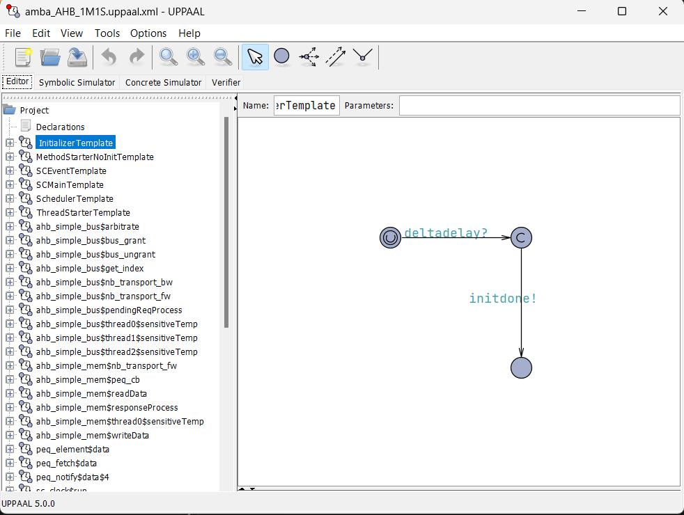
ahb_simple_bus), memory slave (ahb_simple_mem), PEQ automata and master adapter.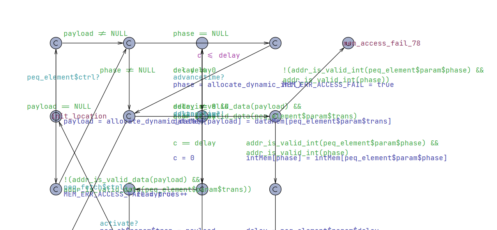
peq_element: the PEQ notification automaton with local clock c and invariant c ≤ delay (paper Fig. 4). It stores the payload and phase, waits until c == delay, then signals the scheduler. The mem_access_fail branches are pointer-safety checks.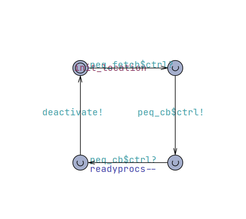
peq_fetch: the callback invocation automaton (paper Fig. 5).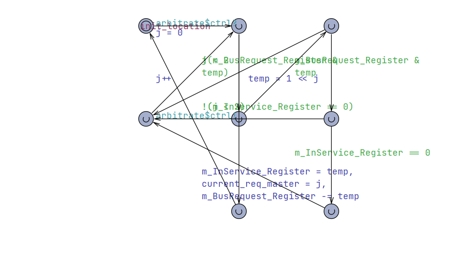
ahb_simple_bus__arbitrate: grants the bus to a requesting master only when m_InService_Register == 0.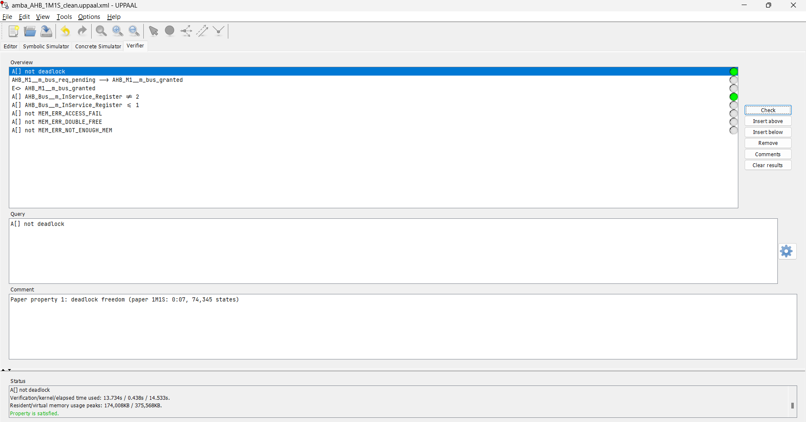
A[] not deadlock: Property is satisfied (13.7 s in the GUI). The command-line run explored 1,241,387 states; the paper reports 74,345.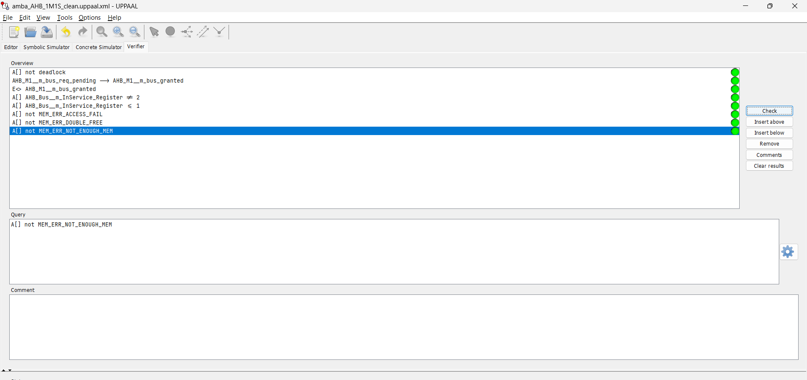
AHB_M1__m_bus_req_pending --> AHB_M1__m_bus_granted); reachability of a grant; the arbiter never grants the unused master-2 slot and its register stays ≤ 1; and no memory errors.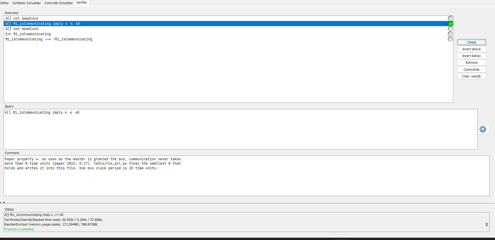
A[] M1_isCommunicating imply x ≤ 40: Property is satisfied (20.5 s). Clock x is reset at every bus grant, as in the paper.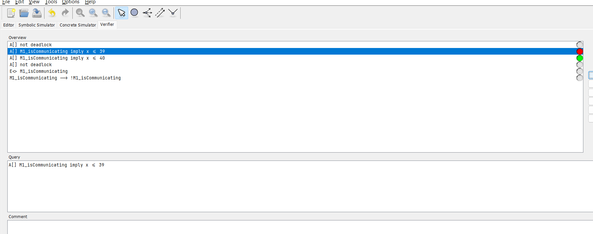
x ≤ 39 is not satisfied while x ≤ 40 is satisfied, so N = 40 time units (2 clock periods of 20) is the smallest bound.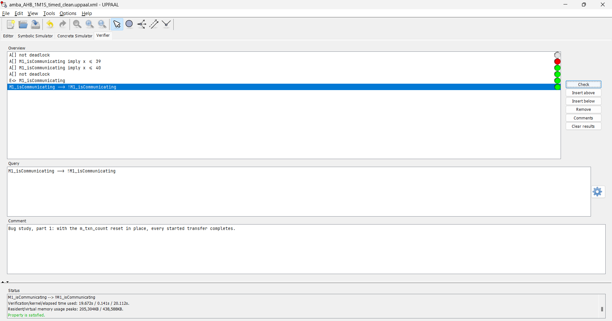
m_txn_count reset in place every started transfer completes (M1_isCommunicating --> !M1_isCommunicating, satisfied).m_txn_count reset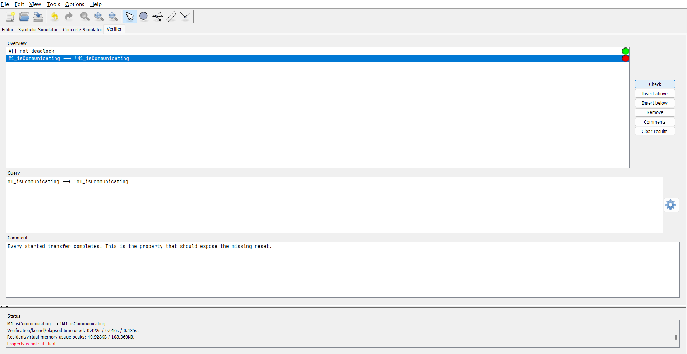
A[] not deadlock is still satisfied, but M1_isCommunicating --> !M1_isCommunicating is not satisfied. The bug shows up as a transfer that never finishes, not as a deadlock.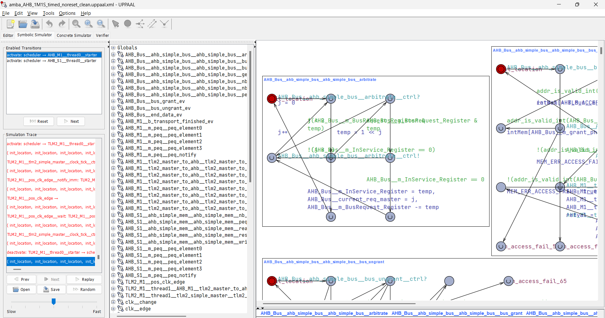
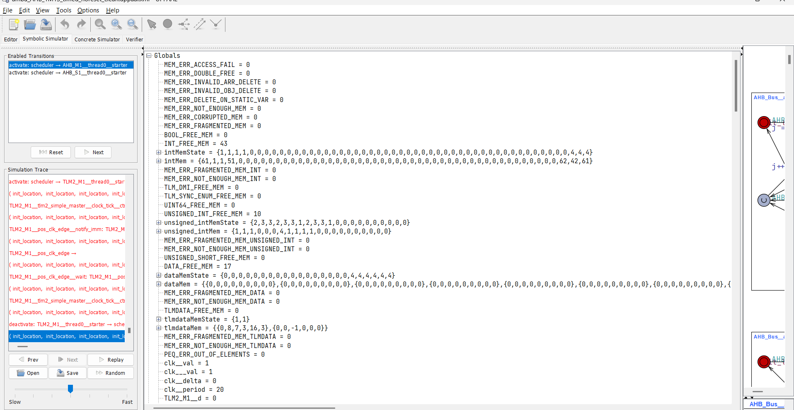
clk__period = 20.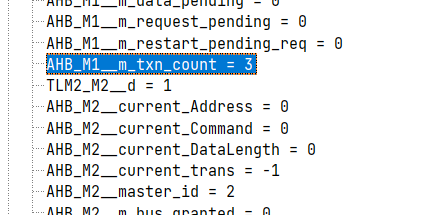
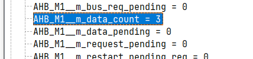
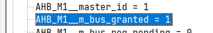
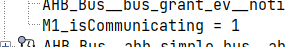
AHB_M1__m_data_count = 3 (all three beats transferred), but AHB_M1__m_txn_count = 3 is never reset to 0, the master still holds the bus (m_bus_granted = 1) and M1_isCommunicating = 1 forever. This is the missing-reset bug described in Section VI-B of the paper.